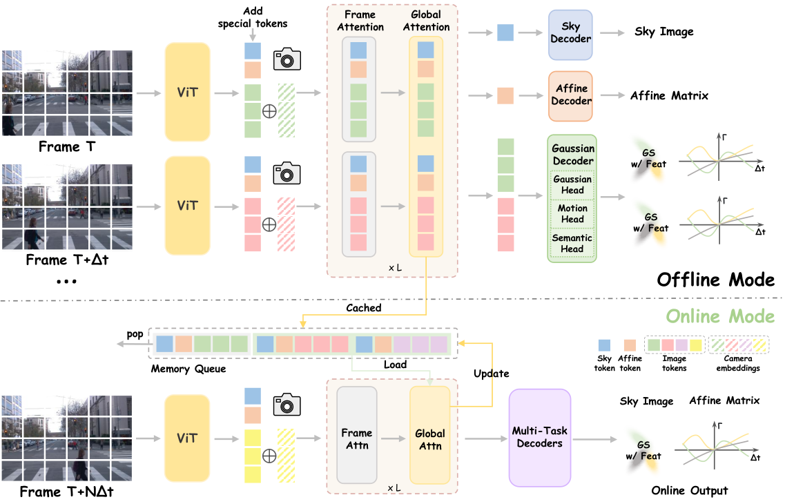
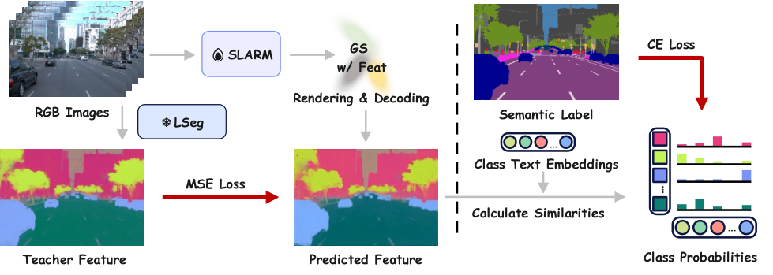

Overview
01 · The Task and the Main Claims
作者把动态重建、语言对齐语义和流式推理放进同一个模型。输入使用已知相机参数，输出带运动与语义属性的三维 Gaussian；语义教师是冻结的 LSeg。在线版本使用窗口因果注意力。这些条件决定它不是一个只凭未知位姿 RGB 完成全部定位工作的系统。
需要解决的矛盾有三个：静态空间表示无法描述运动；只有颜色和位置无法支持语言查询；必须反复处理整段视频的模型不适合逐帧到达的输入。汇报时可以把每个模块放回这三个问题，而不要把方法讲成“主干后面多了几个 head”。
本篇先解释所需概念，再读两张原图，最后检查实现与实验证据。基础解释中的数字例子用于帮助理解，不是论文里的实验样本。
Prerequisites
02 · Gaussians, Scene Flow, and Semantic Features
一个三维 Gaussian 可以理解成空间中可投影的椭球形小元素。中心决定在哪里，尺度与旋转决定形状和方向，不透明度决定遮挡与混合权重，颜色决定投影后的外观。大量这样的元素经可微渲染得到二维图像；它不是一张二维分割 mask。
scene flow 是空间点在两个时刻之间的三维位移，与二维 optical flow 不同。二维像素位移还受到相机运动和投影影响，所以同样大小的三维移动，在图像上不一定移动同样多。
语义向量保存的是可比较的连续特征。若教师的视觉特征与文字特征对齐，就可以用“car”等文字向量与视觉向量计算相似度。相似度高表示语义兼容，不表示两个位置一定属于同一个实例，更不自动建立跨时间 ID。
| Quantity | Meaning | Use |
|---|---|---|
| Gaussian 几何与颜色 | 可渲染的空间元素 | 新视角图像、深度 |
| 运动参数 | 位置随时间的变化 | 时刻变换与运动估计 |
| 语义特征 | 与语言空间可比较的属性 | 文本查询或类别分割 |
| 时间窗口缓存 | 当前预测能读取的历史特征 | 在线上下文；不是对象数据库 |
Architecture
03 · Figure 2: From Inputs to Outputs

Zhicheng Qiu et al., 2026 · Original figure reproduced for scholarly commentary; copyright belongs to the authors · Paper & Caption ↗
图左边每个时刻的图像经 ViT 变成 token；相机与时间信息也进入网络。中间交替的 Frame Attention 和 Global Attention 负责图内与跨时刻信息融合。右边预测几何、运动和语义。图下方的 Memory Queue 对应在线版本复用历史特征的机制。
相机信息为什么必要？像素坐标只能说明图像中的位置。已知内参与位姿后，才能把像素对应的射线放到共同三维坐标中。官方实现的 add_patch_plucker_embed 配置把射线信息注入特征，使相同的图像 patch 能结合其真实观察方向进行解释。
Gaussian 中心可以由射线原点、射线方向与预测距离构成。这个接口把“沿哪里观察”和“物体在多远”分开。汇报时应明确：相机是输入条件，不能把后续渲染准确当作相机定位算法优越的证据。
天空与曝光是辅助问题。背景天空难以用有限深度的表面表达；不同相机曝光差异又可能让颜色损失误导几何。图中的 Sky 与 Affine token 对应这些干扰因素，不是 memory 的语义组织模块。
Motion Model
04 · Motion Representation: Beyond a Linear Model
最简单的运动模型是 Δx=vΔt：速度不变时，时间加倍，位移也加倍。若速度正在变化，就需要加速度项；更高阶项允许加速度在局部区间内变化。SLARM 官方代码的 decode_flow 与时间变形部分采用多阶系数，并按时间幂与阶乘组合。
用一维教学例子看二阶近似：初速度为 1 m/s，加速度为 2 m/s²，经过 0.5 秒，位移是 1×0.5 + ½×2×0.5²=0.75 m；只用恒定初速度会得到 0.5 m。高阶模型的意义是改善局部运动形状，而不是保证任意时间外推都正确。
训练时，把预测的空间元素移到监督时刻并渲染，再和真实目标比较。目标位置错误会表现为边缘错位、重影或颜色不匹配。网络由这些误差学习运动，而不必逐点提供真实三维位移标签。
高阶模型也更容易利用自由度拟合噪声，所以需要运动正则，并核对时间单位和时间间隔。秒与帧编号混用，会把系数意义完全改变。没有 scene flow 真值，不等于没有深度、图像或语义监督。
局部运动展开：Δx(Δt) ≈ vΔt + ½aΔt² + ⅙jΔt³ v：速度；a：加速度；j：加速度的变化率
Semantic Supervision
05 · Figure 3: Supervising 3D Semantics with a 2D Teacher

Zhicheng Qiu et al., 2026 · Original figure reproduced for scholarly commentary; copyright belongs to the authors · Paper & Caption ↗
左边是特征蒸馏：教师从目标 RGB 提取密集语义特征；学生把 Gaussian 上的特征渲染成二维特征图，再经解码对齐。右边是有标签时的类别监督：把预测特征与类别文本特征比较，得到类别概率，再使用交叉熵。两种监督不应混称为“让 VLM 给一个类别”。
官方实现中，每个 Gaussian 的特征维度由 pred_feat_dim 控制，默认 64。把紧凑特征带到渲染阶段，可以减少随空间元素保存的数据；再恢复到教师对齐的特征空间。这与先输出分割 mask，再把 mask 贴在点云上是不同的学习接口。
可以用一个像素解释特征渲染：若它同时受到几个可见 Gaussian 影响，渲染器按覆盖与遮挡权重混合这些元素的语义向量。像素边界混错时，得到的向量也可能与教师不匹配。因此语义是否放到了正确空间位置会影响渲染结果。
蒸馏是训练方式，不是推理时必须运行教师的规定。训练代码中的 online_feat 指训练过程中提取教师特征；它不能与视频流式推理的 online 混为一谈。官方 README 另用 inference_stream.py 与 window 模式指定流式推理。
Implementation Analysis
06 · Do Semantic Gradients Reach Geometry?
从数学上看，如果语义渲染权重依赖位置，特征损失就存在两条潜在梯度通路：一条更新特征向量，一条经混合权重更新几何与运动。这是可微渲染的一般机制，不足以证明每种代码配置都开启了两条路径。
核对官方 src/models/slarm.py：concat_feat_render 为真时，特征和颜色一起进入渲染；另一条单独特征渲染分支显式对 means、quats、scales、opacities 使用 detach，阻止该分支直接把特征损失传给这些渲染参数。该选项默认值与实际调用配置都需要检查。
此外，README 的 NPU 示例使用 CONTEXT_FEAT，并注明特征只在输入视角监督。这又不等同于完整目标视角特征渲染。论文的统一描述、发布实现中的硬件分支、实际运行配置必须分开核对。
因此可成立的结论是：语义与几何可以通过共享表征及部分渲染路径发生耦合。若要声称“语义直接纠正位置”，应做梯度检查，并比较开启或截断对应通路的消融。这比只看网络图上有没有连线更有说服力。
F̂(p) = Σᵢ wᵢ(p; geometry, motion) fᵢ 特征可更新：∂L/∂fᵢ 几何能否直接更新：取决于 wᵢ 的计算图是否保留梯度
Training and Inference
07 · Training, Online Inference, and Reproduction
训练看监督：README 提供图像感知损失、深度损失、天空不透明度损失、运动正则与特征损失开关。有语义标签时可切换为类别概率损失。数据加载 flow 的开关并不能证明 flow 被当作训练监督，应继续追踪实际 loss 是否使用该字段。
推理看可用输入：当前时刻只允许读取已到达的帧，并通过有限窗口复用缓存。固定窗口控制的是网络读取的上下文范围；应用如果把所有输出 Gaussian 永久累计，仍可能增加存储。
原文在线模式还会从当前时刻向最近历史时刻回传动态 Gaussian。它没有读取尚未到来的输入，但对过去区间的回溯表达与当时即刻输出不是同一延迟条件。做在线评测时，应同时写明“何时得到结果”与“结果描述哪个时刻”。
截至本次核对，官方仓库公开了训练与评估代码，但 README 说明预训练权重暂不便公开。本笔记只核对文本与代码，没有运行训练，也不把代码发布等同于结果已被独立复现。
Experimental Evidence
08 · Experiments: Reconstruction and Semantic Benefits
原文 Table 1 的 Waymo 非天空区域：在线 SLARM-W 的 PSNR 为 27.30、深度 RMSE 为 4.75；作者复现 STORM 对应为 25.86、5.47。离线 SLARM-F 为 27.49、4.57。语义 mIoU 报告涉及标签训练，不能解释为仅靠教师蒸馏的提升。
PSNR 衡量图像像素误差，越高越好；深度 RMSE 衡量深度偏差，越低越好。前者改善不自动等价于三维位置更准，后者改善也不能替代相机轨迹指标。选择这两列，是为了同时检查外观与几何。
由上述数字计算，在线模型相对 STORM 的 PSNR 增加 1.44 dB，深度 RMSE 下降约 13.2%；相对离线 SLARM，在线质量有小幅损失。这支持效率与质量的折中，但系统同时修改了运动、语义和推理方式，不能把差值全部归因于语义。
组会上如果问“语义究竟改善了什么”，应该回到语义开关消融、动态区域误差与梯度路径，而不是用总模型超过基线来代替模块证据。类别 mIoU 还不能证明实例级持久跟踪成立。
Discussion
09 · Connections to LingBot-Map
两者的输出表示和输入条件不同：一个重点是带语义、运动属性的可渲染场景，另一个重点是未知位姿视频的流式几何上下文。直接移植一个语义 head，不会自然得到更好的长期记忆。
可借鉴的原则是：辅助监督需要经过想改进的表示。如果目标是让压缩 memory 更有用，就应设计必须读取该状态才能完成的语义或几何任务，并排查当前图像旁路是否绕开它。
一个有意义的对照是固定缓存预算，让同样的语义教师分别监督当前密集特征和压缩历史状态，再测试长间隔读取与后续重建。只有后者表现出额外收益，才能说监督改变了 memory 的信息保留。这是我们的研究设想，不是 SLARM 已经证明的结论。
Discussion
Questions for Discussion
Does SLARM use a conversational VLM?
核心教师为 LSeg 的密集语言对齐特征，不需要多轮对话式推理。文本相似度查询与聊天推理是不同接口。
Does semantic loss always update geometry?
不一定。官方代码有 detach 几何参数的特征渲染分支；需核对实际配置。共享主干还可能带来间接影响。
Can its results be compared directly with LingBot-Map?
不能。输入相机条件、输出表示和评测任务不同，应先构造共同协议。
Which component should be reproduced first?
先确认相机与时间坐标，再核对特征监督路径、loss 开关及 checkpoint 来源；这比直接跑整个大规模训练更能排除接口错误。
References
- Paper · v1 ↗
- Official Repository ↗
- Official Implementation · slarm.py ↗
- Official Implementation · losses.py ↗
仅选取与正文讨论直接相关的作者原图，保持原图内容并注明出处；点击图片可查看大图。原文事实、基础解释、个人分析分别标记。本笔记未运行训练或复现实验。
Verified on October 12, 2026. Paper claims refer to the linked versions; code references reflect the official repositories on this date.